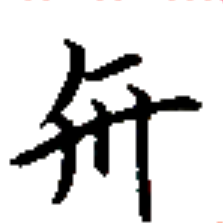
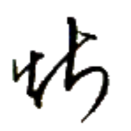
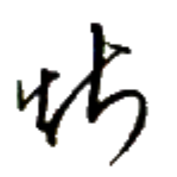
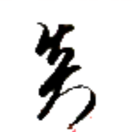
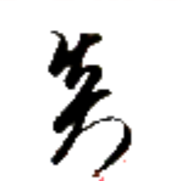
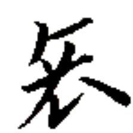
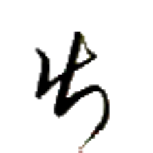
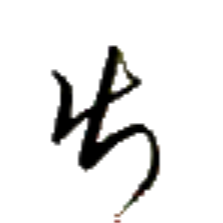

パー⤴ 【犬】
[名詞] 犬
[略号] (音楽)基準音の1半音上の音
馬弓兵 マウン→グア⤴カウㇰ⤴ 【馬弓兵】
[名詞] (特にヴェフィスの)騎馬兵、(セッカイクの役)馬弓兵
筆兵無傾 クア⤴カウㇰ⤴ムン→アウㇺ⤴ 【筆兵無傾】
[成句] 書記官と兵士の力が均衡していて国家が安泰であること。緯武経文。
国の維持に重要とされ、筆と槍を図案化したシンボルが存在し、アイル共和国国章などに用いられている。
[名詞] セッカイクの役の 1 つ
 

カイㇰ· 【戦】
[動詞] 戦う、戦争をする
[名詞] 戦争、戦い、戦闘
[略号] 戦行集【戦行集】（アイル共和国兵部省）
 

ニエ· 【隊】
[名詞] 部隊
[名詞] セッカイクの駒を作る途中での、駒8つがまだ切り離されず1まとまりになっている列
[名詞] 1バイト、1オクテット
[助数詞] 列をひとまとめにして数える助数詞
字豊論貧 マン→ホウ→ツイ→ヘイ⤴ 【字豊論貧】
[成句] 無駄に多種類の字や語を使っておきながら、伝えたい内容が薄いこと
リン王は、言語政策を成功させるべく『限られた文字種で万物を書くことが如何に優れていて偉いことであるか』という考えを官民の間に広めて根づかせることに極めて力を注いでいたため、今なお燐字書記言語の伝統はそこに強く影響されている。ゆえに、燐字圏においては、燐字を 700 字知ってれば生活で困ることが全然ないと言われている。

イェイ⤴ 【冶】
[名詞] 卑金属、道具用の金属
[名詞] イェイ、イェクト（人名）

 
